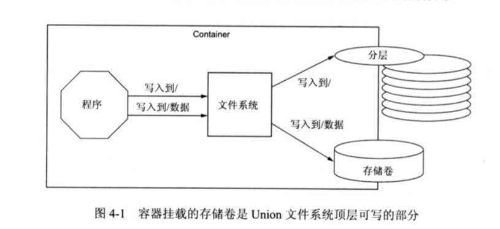
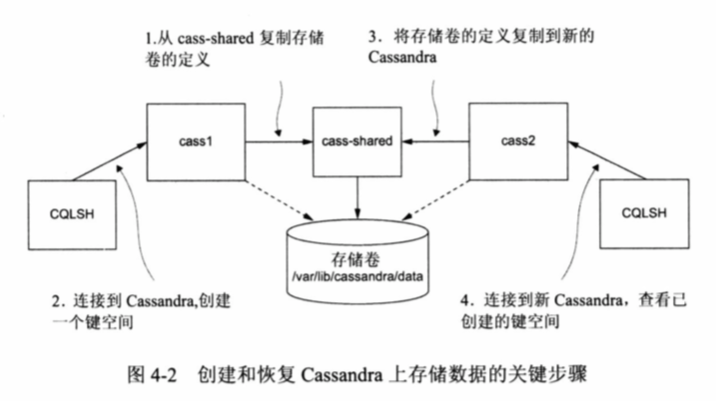
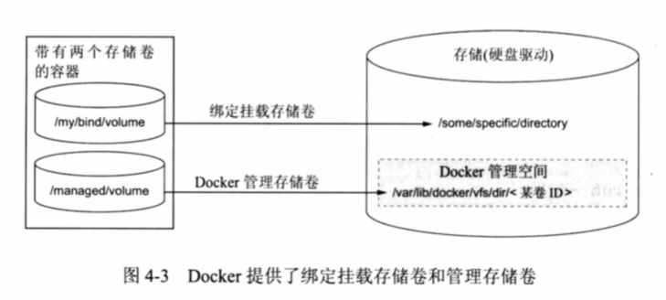

介绍存储卷以及容器之间如何管理数据的方法。
就像在容器中运行一个数据库程序一样，你可以将软件打包在镜像中，当启动容器时，它将初始化空的DB，当其他程序接入该DB时并存入数据，这些数据要如何才能保存下来？暂停一个容器或删除一个容器，这些数据要怎么办？升级数据库程序，如何迁移？
存储卷简介
一个主机或容器的目录树是由一组挂载点创建而成，这些挂载点描述了如何能构建出一个或多个文件系统。
存储卷提供容器无关的数据管理方式
存储卷是一个数据分割和共享的工具，有一个与容器无关的范围或生命周期。这使得存储卷成为容器化系统设计中关于文件共享或写入最重要的一部分。数据示例根据其范围或者接入容器方式的不同分为以下几种：
- 数据库软件与数据库中的数据
- web应用程序与日志数据
- web数据处理应用程序的输入和输出数据
- web服务器与静态内容
- 产品与支持工具
镜像适合打包和分发相对静态的文件，如程序；存储卷则持有动态或专门数据。这种区别使得镜像可重用，数据可简单分享。
更为基本的是：存储卷可以隔离应用程序和主机的关系。镜像被装载到主机，创建出一个容器。Docker不知道主机在哪里运行，只能判断哪些文件在容器中可用。也就是Docker本身就没有办法利用主机上的设施，如装载的网络存储、混合光纤、固态硬盘。但有主机知识的用户可以使用存储卷，在容器中将这些目录映射到主机的存储上。
NoSQL数据库使用存储卷
Apache Cassandra项目提供了一个具有内置集群，最终一致性和线性写入可伸缩的列数据库。下面使用官方的Cassandra镜像创建一个节点集群，并创建一个键空间，删除容器，然后再另一个容器中恢复这个新节点的键空间。
创建已定义存储卷的单个容器，这也被称为存储卷容器（高级模式）
docker run -d --volume /var/lib/cassandra/data --name cass-shared alpine echo Data Container
存储卷容器将立即停止。不要删除他。会在后面创建运行Cassandra新容器时，使用这个存储卷：
docker run -d --volumes-from cass-shared --name cass1 cassandra:2.2
Docker下载完镜像，创建一个新容器，并复制存储卷容器的卷定义。然后容器的存储卷挂载在/var/lib/cassandra/data。指向主机目录树相同的位置。接下来，从cassandra:2.2镜像启动容器，运行Cassandra客户端工具，并连接到正在运行的服务器：
docker run -it --rm --link cass1:cass cassandra:2.2 cqlsh cass
接下来就可以从CQLSH命令行检查或修改Cassandra数据库。首先查找一个docker_hello_world的键空间
select * from system.schema_keyspaces where keyspace_name = 'docker_hello_world';
Cassandra应该返回的是(0 rows)的空列表，下面使用命令进行创建
create keyspace docker_hello_world with replication = { 'class':'SimpleStrategy', 'replication_factor':1 };
然后再执行上面的查询会看到插入的结果。使用quit命令退出CQLSH程序并停止容器
容器在创建时，使用了--rm标志，在命令停止会被自动删除。通过停止和删除所创建的Cassandra节点
docker stop cass1
docker rm -vf cass1
执行完成后，Cassandra客户端和服务器都将被删除。如果刚才所做的修改需要持久化，唯一办法就是存储卷容器。 可以重复上面的步骤进行测试，下图描述了整个系统。 
下面使用三个命令将测试数据恢复
docker run -d --volumes-from cass-shared --name cass2 cassandra:2.2
docker run -it --rm --link cass2:cass cassandra:2.2 cqlsh cass
select * from system.schema_keyspaces where keyspace_name = 'docker_hello_world';
会发现有一条数据
存储卷类型
存储卷有两种类型，每一个存储卷就是容器目录树的挂载点在主机目录树中的位置，但不同的存储卷类型在主机的位置是不同的。
- 绑定挂载存储卷：使用用户提供的主机目录或文件
- 管理存储卷：使用由Docker守护进程控制的位置，被称为Docker管理空间，如下图 
绑定挂载卷
绑定挂载存储卷 在主机提供的文件或目录需要挂载到容器目录的特定位置时，很有用
- 将数据分享给运行在容器外的进程，比如主机系统组件
- 将主机数据通过已知的主机目录分享给容器中运行的程序
下面使用DOcker启动web服务器，并绑定挂载你的文档地址在web服务器新容器的文档根目录上。在主机用户根目录执行以下命令
mkdir example-docs
cd example-docs
touch index.html
echo hello world > index.html
然后启动web应用程序
docker run -d --name bmweb -v ~/example-docs:/usr/local/apache2/htdocs -p 8090:80 httpd:latest
使用-v选项和位置映射来创建绑定挂载卷。该映射以冒号分割。冒号左边是：主机文件系统上的绝对路径，冒号右边是：容器中挂载的目标存储位置。必须使用绝对路径指定该位置。
你在主机上访问http://localhost:8090/ 会出现hello world
如果你想确保在Apache HTTP web服务器不能更改此卷内容，可以通过在存储卷映射规则后追加：ro来完成。
docker rm -vf bmweb
docker run -d --name bmweb_ro -v ~/example-docs:/usr/local/apache2/htdocs/:ro -p 8090:80 httpd:latest
通过挂载只读，可避免容器内的任何进程修改该卷内容
注意：如果你指定了一个不存在的主机目录，Docker会为你创建相应的目录。
绑定挂在卷并不仅限于目录，还可以绑定挂在卷装入单个文件。在创建或链接资源时，避免与其他资源的冲突，提供灵活性。 当你要安装一个特定的文件到一个包含其他文件的目录。如果你用整个目录绑定挂载到该位置，那么其他文件都将丢失，通过使用一个特定文件作为存储卷，可以只覆盖或插入单个文件。
注意：文件必须在创建容器之前就存在于主机上，否则Docker将自动创建一个目录，把它挂在在需要的文职
Docker管理卷
Docker管理卷不同于绑定挂载卷，因为Docker守护程序会在主机文件系统中创建存储卷，并有Docker管理。
使用管理卷是一种在文件系统特定位置解耦卷的方法。当你执行 docker run 使用-v选项，只要指定容器目录树中的挂载点，管理卷即可创建。在前面的Cassandra示例已经创建了管理卷
// 容器中指定存储卷的挂载点
docker run -d --volume /var/lib/cassandra/data --name cass-shared alpine echo Data Container
当你创建这个容器时，Docker守护程序在主机文件系统中创建了目录。来存储这三个存储卷的内容。可以使用docker inspect命令过滤这存储卷来找到这个目录的确切位置。
docker inspect cass-shared | grep Mounts -A 10
-A 10代表找到Mounts后面的10行内容也显示出来
你会看到Source和Destination的位置
通过使用Docker管理卷，你只要简单的指出“我需要一个地方存放一些我工作的数据”
共享存储卷
容器之间存储卷的共享
主机依赖的共享
多个容器主机依赖的共享：每个容器在主机文件系统的已知位置有一个绑定挂载卷。 下面创建两个容器，一个名为plath的容器写文件，一个容器则读该文件。这两个容器都有一个共同的绑定挂挂载卷。
mkdir web-logs-example
docker run --name plath -d -v ~/web-logs-example:/data dockerinaction/ch4_writer_a
docker run --rm -v ~/web-logs-example:/reader-data alpine:latest head /reader-data/logA
共享和columes-from 标志
docker run命令提供一个标志，可将卷从一个或多个容器复制到新的容器中。标志 --volumes 可设定多次，可指定多个源容器。
--volumes-from标志：复制任何本卷所引用的元容器到新的容器中。该标志也有传递性，可以直接或者传递的复制卷。
注意：复制卷始终具有相同的挂载点。
管理卷的生命周期
管理卷的生命周期独立于任何容器，你只能通过容器来引用它们。
管理卷的权限
管理卷是二等实体，没有办法分享或删除特定的管理卷，因为没有办法指定一个管理卷。 如果你不适用绑定挂载卷，只创建了管理卷，那么只能通过它们的容器来区分。 区分存储卷最好的方法是为每一个管理卷定义一个容器。这样有利于删除特定的存储卷。否则需要在容器中检查卷的映射，并手动清理Docker管理空间。删除卷需要被引用的容器，重要的是了解哪些容器拥有这个管理卷。
存储卷的清理
清理管理卷是一个手动的任务，可以防止意外损坏潜在的有价值的数据。Docker守护程序无法删除绑定挂载卷，因为源卷不在Dokcer管理范围内。
删除容器时，Docker可以删除管理卷。运行带有-v选项的docker rm命令试图删除除目标容器中引用的任何管理卷。由其他容器引用的管理卷江北忽略，但内部引用计数仍然会递减。
如果删除一个已引用管理卷的容器，但没有使用-v标志，就会产生孤立卷。移除孤立卷需要一些列手工操作。所以我们移除容器时最好ca用加上-v标志，防止孤立卷
docker rm -v container
还可以使用如下命令删除所有停止的容器和卷：
docker rm -v ${docker ps -aq}
存储卷的高级容器模式
卷容器模式
卷容器模式：是一个容器，只提供卷的句柄。如果你遇到一个用于与多个容器共享一组卷的情况，或者需要对一组适合常见用例的存储卷进行分类，那么这将很有用。 卷容器不需要运行，因为停止时容器仍能保证存储卷的引用。
数据打包的存储卷容器
数据打包的卷容器将镜像中的静态内容复制到其定义的存储卷。这些容器可用于分发关键架构信息，如配置、密钥材料和代码。
多态容器模式
多台工具就是以一致性的方式进行交互，但可能有几个实现，分别做不同的事情。使用存储卷你可以注入不同行为到容器中，而无需修改其镜像，